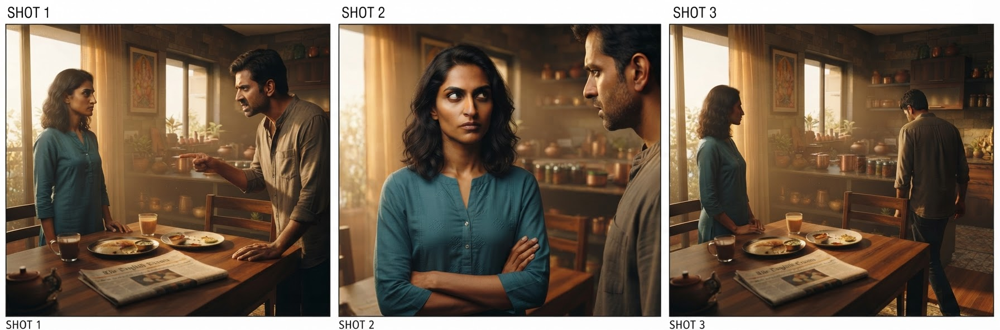

Part 1 of The Agentic Studio. The disruption in multimedia is not a better render function. It is the coordination layer around one — the scheduler, the state store, and the invariants that force N stochastic outputs to agree. This part is the argument for why that layer is an agent, and why it is buildable now.
Every "AI video" launch is a better render function: prompt → asset. One call, one output, no
memory of the last output or obligation to the next. That curve is real and it is steep.
It is also solving the wrong problem. A film is not an asset; it is a set of assets under a consistency constraint. The same face across 40 shots. The same set geometry from three angles. The same key light, the same screen direction, cut after cut. The value — and the difficulty — is not in any single frame. It is in the agreement between frames.
You have seen what happens when that agreement breaks, because it makes the blooper reels. The coffee cup left on the table in a medieval fantasy series. The glass that's full, then empty, then full again across a single conversation. A character looking screen-left, then — after the cut — inexplicably screen-right, so the two people in the scene seem to have swapped seats. (That last one has a name: crossing the 180° line, the invisible line between two actors that the camera must stay on one side of, or they flip sides on screen and the audience feels lost without knowing why.) Now add the failure unique to generative models: ask one for "the same character" twice and you get two subtly different people, because it has no memory of the last frame and no obligation to the next — like a film where the lead is recast, slightly, in every scene. Every individual frame can be flawless and the movie still falls apart.

The opposite of a blooper: three shots the studio produced for a single scene — a wide two-shot, her close-up, then the reverse angle. Same two people, same room, same wardrobe, same light, consistent screen direction. This agreement between frames is precisely what a stand-alone render can't give you, and precisely what the rest of this series is about producing on purpose.
Improving the render function makes each frame better in isolation. It does nothing for the constraint that they agree. That constraint is a systems problem, and systems problems are solved with schedulers and state, not with prompts.
This is the category error the market is making: pouring capital into the render function while the actual product — coordinated, consistent, multi-asset output — sits one layer up, untouched.
A film crew is a distributed system that predates computers. Read the org chart as architecture:
The crew is not a metaphor for the system. The crew is the system, implemented in people. Replacing the people with an agent and its tools changes the substrate, not the shape.
Three things had to be true at once, and only recently were:
tools/call. The coordination layer can treat every generator identically.Capability + craft + cheap iteration is the whole precondition. Note what is not on the list: a frontier model breakthrough. The pieces are here; the missing work is architecture.
The Agentic Studio is a bet on where the value accrues. Restated as an engineering position:
The render function is being commoditized by everyone at once. The durable, defensible layer is the orchestrator that turns a render function into a production — shared state, dependency ordering, deterministic continuity gates, and a critic loop that enforces cross-asset consistency. Own that layer and the render function becomes a swappable backend.
That last clause is the strategic core. If the studio treats every generator as an interchangeable
tools/call, then a better model — anyone's — is an upgrade, not a competitor. You are not racing
the render function. You are the thing it plugs into.
The one line to leave with: stop building a better camera; build the crew that knows what to do with one.
Built on a real MCP + Skills film-production pipeline. Foundations: MCP and Skills.